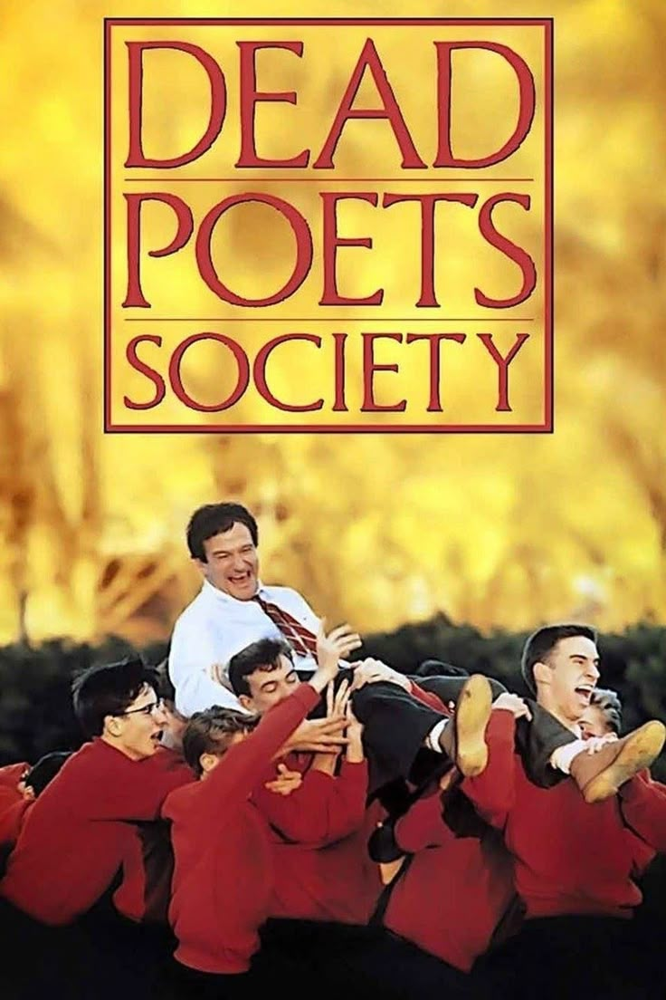
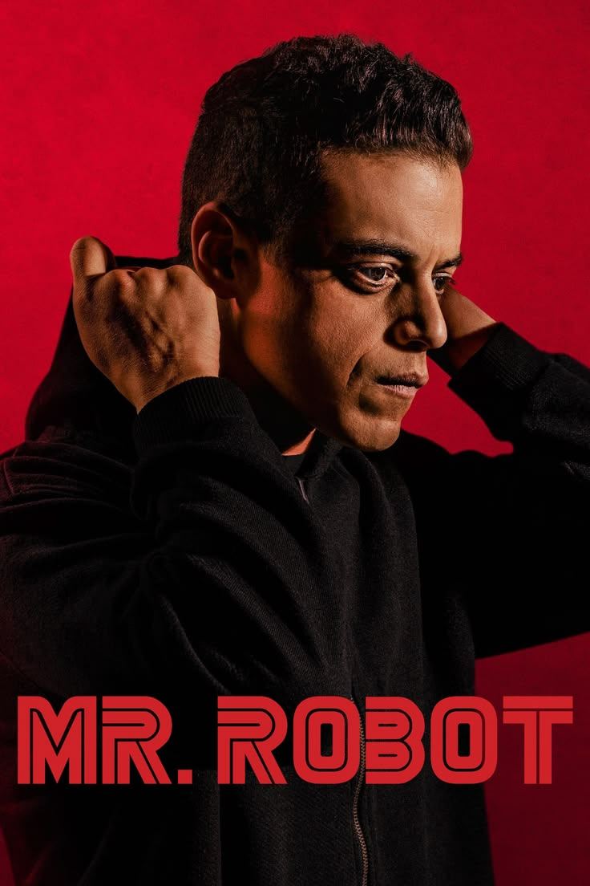
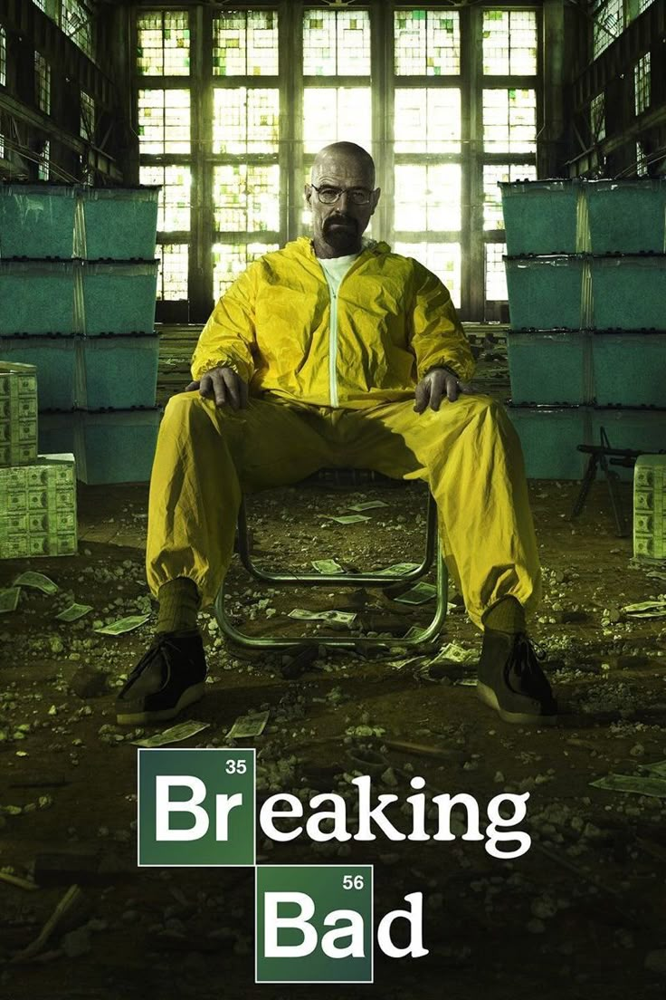

Favorites

Dead Poets Society

Fight Club

Forrest Gump

Mr. Robot

Breaking Bad

Better Call Saul
"fuck yourself if you think you can’t do it."
I focus on coding, cybersecurity, and understanding systems. I’ve been a delegate for Australia, Syria, and now Romania in MUN.
I like building things, breaking them, and improving them. I’m interested in programming and cybersecurity.
Nyanyian Sunyi Alamku
Di bawah langit yang diam namun luas,
aku menemukan suara yang tak bersuara—
angin yang lembut mengusap waktu,
membawa bisikan sunyi yang mengajakku hidup hari ini, bukan nanti.
Pepohonan berdiri tanpa keluh,
mengajarkan kuat tanpa perlu terlihat gagah;
daunnya jatuh bukan karena kalah,
melainkan karena tahu kapan harus melepaskan.
Dari sana aku mengerti,
hidup bukan tentang bertahan selamanya,
tetapi tentang berani berubah.
Sungai mengalir tanpa ragu,
melewati batu, luka, dan jarak panjang,
namun tetap jernih dalam tujuannya.
Seperti itu pula aku ingin berjalan—
tidak selalu mudah,
namun tetap setia pada arah yang kupilih.
Dan ketika senja turun perlahan,
alamku tidak pernah benar-benar pergi;
ia tinggal di dalam dada,
menjadi cahaya kecil yang terus mengingatkan:
hidup ini singkat,
maka jalani dengan penuh arti.

Dead Poets Society
Fight Club
Forrest Gump

Mr. Robot

Breaking Bad
Better Call Saul